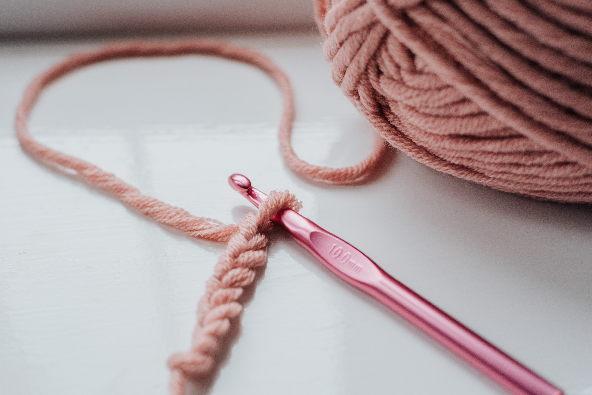
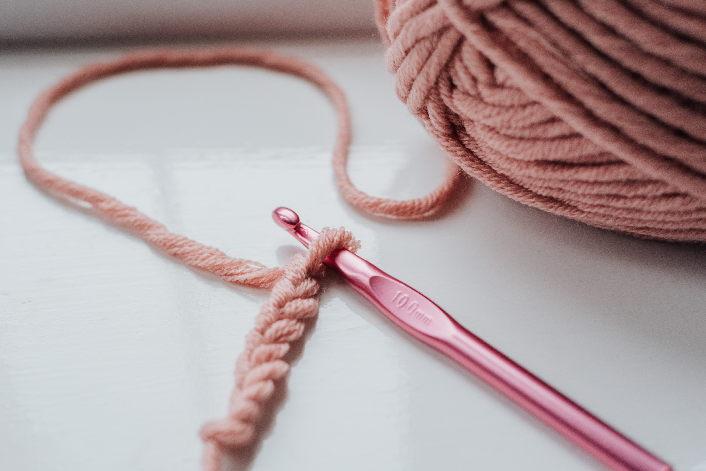

Overview
Purpose
I have been crocheting since 2017 and I enjoy hand making dish cloths and blankets. My purpose is to sell my handmade dish cloths, I hope you enjoy them. Thank you for supporting a personal business, I enjoy what I do and I hope you enjoy the dish cloths!
Audience
My audience is people who are older and younger and who want to see the things I have crocheted and buy them. My purpose is to sell my crocheted dish cloths and show people the things I can make.
Branding
Website Logo
 alt="Logo Image">
alt="Logo Image">
Style Guide
Color Palette
Style Guide
https://coolors.co/db995a-654236-d6d4a0-da7635-e24e1b| Primary | Secondary | Accent 1 | Accent 2 |
|---|---|---|---|
| #DA7635 | #D6D4A0 | #654236 | #DB995A |
Typography
Heading Font: Dancing Script
Paragraph Font: Raleway
Normal paragraph example
There are so many things to crochet! The things I love to crochet are dish cloths and coasters. A fun fact is the difference between crocheting and knitting is that in crochet, each stitch is completed before moving onto the next. In knitting, a large number of stitches may be kept open at once. Another fun fact about crocheting is that it has been proven to help with insomnia, stress, anxiety, and depression.
Colored paragraph example
The things I have created are dish cloths and coasters.
Navigation
Site Map
Home
There are so many things to crochet! The things I love to crochet are dish cloths and coasters. A fun fact is the difference between crocheting and knitting is that in crochet, each stitch is completed before moving onto the next. In knitting, a large number of stitches may be kept open at once. Another fun fact about crocheting is that it has been proven to help with insomnia, stress, anxiety, and depression.
Images for the Home page
 

Crochet with me
Here are photos of what my designs look like. Crocheting is healthy, it improves your overall health by significantly by reducing your stress level and lowering your blood pressure. They also improve circulation to your hands. Using both of your hands in different ways and stimulates your brain, thus giving your brain a workout not many other activities do.
Images for the Page 2


Contact Me
Here is my Contact Information: 801-444-5555 clawson@gmail.com
Images for the Page 3

Wireframes
Create three wireframes for your site. One for each page and list them here
Home
Here are some crochet patterns you can do. Polyester Yarns Polyester yarns are easy to make into baby blankets because they are a chenille style yarn that is soft and breathable. A good deal of crochet baby blanket patterns will have the size listed within in the pattern, but may also have sizes that are even larger. Be sure to look over the pattern you pick to be sure of the size baby blanket you are going to make. You will need a size K hook, and yarn needle. Use hook size I/9 (5.5mm) for teen adult small mitten. Use hook size J/10 (6.0 mm) for adult size medium. The final round at the cuff is worked into the posts of the previous round and creates the appearance of rolling. This is an intended part of the design. Insert hook into stitch, yarn over and pull through stitch (2 stitches on hook), insert hook into next stitch of round, yarn over and pull through stitch (3 stitches on hook), yarn over and pull through all 3 stitches on hook.

Crochet with me
The final round at the cuff is worked into the posts of the previous round and creates the appearance of rolling. This is an intended part of the design. A small length of contrasting yarn may be used in place of a stitch marker. Weave the yarn upwards as you work rounds in the piece. See picture on page 10. The yarn used for these mittens contains natural fiber and requires special laundering. Please read yarn labels and follow directions to maintain the life of your crochet work. Special Stitches Single Crochet 2 Stitches Together: Insert hook into stitch, yarn over and pull through stitch (2 stitches on hook), insert hook into next stitch of round, yarn over and pull through stitch (3 stitches on hook), yarn over and pull through all 3 stitches on hook. Front Post Single Crochet: Insert hook right to left behind the post from round below, yarn over and finish stitch as a single crochet.

Contact Me
Adult Hill Crest Crochet Mitten Pattern Free Crochet Patterns: Mittens Women's Crochet Mitten Pattern with Simple Texture Skill Level: Easy/Intermediate Pattern Notes Please take time to create a gauge sample before beginning work These mittens are worked in a continuous spiral and will create a diagonal pattern. Do not join rounds unless indicated Use hook size I/9 (5.5mm) for teen adult small mitten Use hook size J/10 (6.0 mm) for adult size medium.